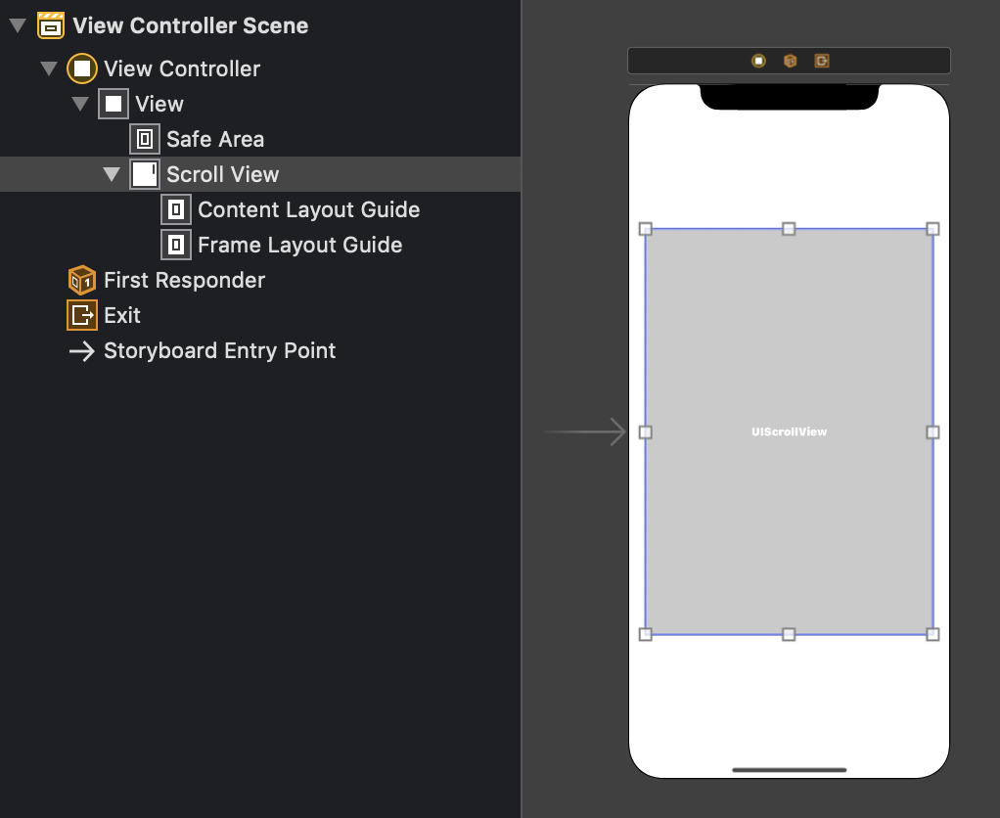
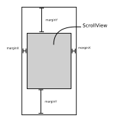
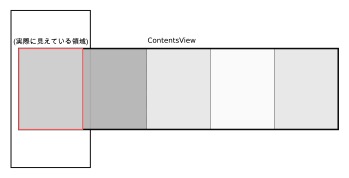
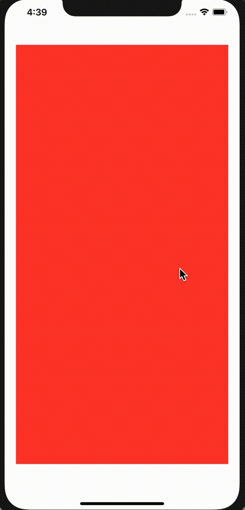
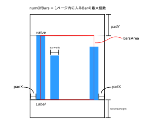
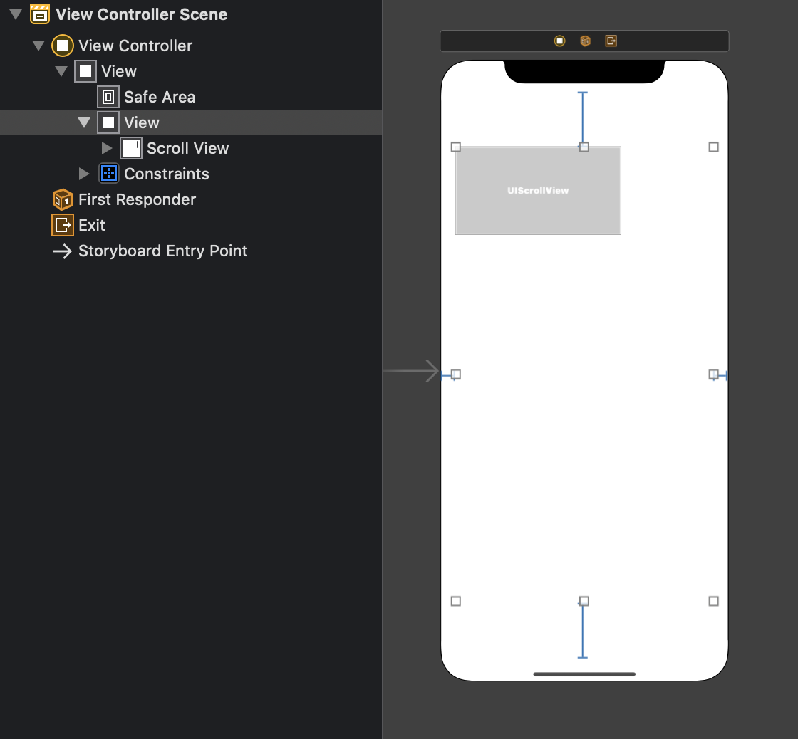

目標
- 前回の棒グラフを複数ページにする
- ページは横スライドで切り替える
プロジェクトは前回のものを引き継がず、新しく作る。
用いるデータ
ViewController.swiftが次のようなデータを持っていることを想定する。
var dataSource = [
(7, "太郎"), (1, "次郎"), (2, "三郎"), (6, "四郎"), (3, "五郎"),
(9, "六郎"), (2, "七郎"), (3, "八郎"), (1, "九郎"), (5, "十郎"),
(1, "十一郎"), (1, "十二郎"), (6, "十三郎")
]
このデータは、後で整形してグラフ描画用のデータに変換する。
Main.storyboardにUIScrollViewを配置する。サイズ設定はコードで行うので、ここでは単に配置するだけ。

その後、UIScrollViewのOutlet接続をViewController.swiftに対して行う。
「スクロールの対象となるコンテンツを中に入れる」だけで、スクロール可能なViewが作れる。ただし、思い通りの表示にするためには、UIScrollViewやコンテンツのサイズを設定しておく必要がある。
複数ページを持つコンテンツを作りたいので、コンテンツ用Viewの中にページ用のViewが複数存在する状態になる。なのでページの位置やサイズもちゃんと設定する。
こんな感じにする。

なのでコードはこんな感じにする。
class ViewController: UIViewController {
@IBOutlet weak var scrollView: UIScrollView!
let marginX: CGFloat = 80
let marginY: CGFloat = 40
override func viewDidLoad() {
super.viewDidLoad()
scrollView.frame = CGRect(
x: marginX,
y: marginY,
width: view.bounds.width - 2*marginX,
height: view.bounds.height - 2*marginY
)
}
}
contentsViewのレイアウト
例えばページが5枚だとすると、ページ5枚で1つのcontentsViewを作る。それを念頭においてレイアウトを組む必要がある。

ダミー用GraphView作成
GraphViewに関する位置、サイズの設定は、イニシャライザに任せるように書く。引数として、(ページ番号, スクロールビューのサイズ, データ)を与える。とりあえず今の所はデータを色として、これをbackgroundColorに設定する。
上のレイアウトから、i番目のページのx座標はi * size.widthで与えられることが分かる。
class GraphView: UIView {
init(index: Int, size: CGSize, color: UIColor) {
super.init(frame: CGRect.zero)
backgroundColor = color
frame = CGRect(
x: CGFloat(index) * size.width,
y: 0,
width: size.width,
height: size.height
)
}
required init?(coder: NSCoder) {
fatalError("init(coder:) has not been implemented")
}
override func draw(_ rect: CGRect) {
}
}
VieController.swift
ページ数とデータを定数として定義する。contentsViewを作る処理は関数に分けておく。
let data: [UIColor] = [.systemRed, .systemIndigo, .systemPink, .systemGreen]
lazy var numOfPages: Int = data.count
@IBOutlet weak var scrollView: UIScrollView!
...
let contentsView = createContentsView()
scrollView.addSubview(contentsView)
scrollView.contentSize = contentsView.frame.size
}
private func createContentsView() -> UIView {
let contentsView = UIView(frame: CGRect(
x: 0,
y: 0,
width: scrollView.frame.width * CGFloat(numOfPages),
height: scrollView.frame.height
))
for (i, datum) in data.enumerated() {
let pageView = GraphView(index: i, size: scrollView.frame.size, color: datum)
contentsView.addSubview(pageView)
}
return contentsView
}
この時点でアプリを起動してみると、次のようになる。よく見ると下にスクロールバーが付いている。

ユーティリティ関数/メソッドの定義
Util.swiftを作成して、以下の記述を追加する。これは前回お世話になったscaleLinear関数。
import UIKit
// ran[1] - ran[0]
// f(x) = ----------------- * (x - dom[0]) + ran[0]
// dom[1] - dom[0]
func scaleLinear(domain dom : (CGFloat, CGFloat), range ran: (CGFloat, CGFloat)) -> ((CGFloat) -> CGFloat) {
return { (x: CGFloat) -> CGFloat in
(ran.1 - ran.0)/(dom.1 - dom.0)*(x - dom.0)+ran.0;
}
}
続いて、以下の記述を追加する。これはArrayのextensionで、ある配列をk個単位に分割するときに用いる。例えば、[1,2,3,4,5,6,7,8].chunked(into: 3)とすると、[[1,2,3],[4,5,6],[7.8]]が返ってくる。
ちなみにこのメソッド定義はこちらのもの。strideを使ってうまく書けている。
extension Array {
func chunked(into size: Int) -> [[Element]] {
return stride(from: 0, to: count, by: size).map {
Array(self[$0 ..< Swift.min($0 + size, count)])
}
}
}
棒グラフのレイアウト
前回と少し変えて次のようにする。

Barの番号は0から数えるものとする。なのでx座標用のscaleLinearを定義するときにdomainを(0, numOfBars-1)にする。前回はこの辺りの記述をあまり考えずやっていたので、x座標が若干ずれていたかもしれない。
padXは画面両端の余白と定義する。barWidthは固定長として定義し、Barの間隔は前回のxScaleによって勝手に設定されるので考えない。
グラフ描画情報を持つクラスの作成
グラフの大きさやscale関数、テキストの大きさやフォントなどの設定はクラスとしてまとめておく。
新たにBarChart.swiftを作成し、内容を以下のようにする。
struct BarChartScale {
var x: (CGFloat) -> CGFloat
var y: (CGFloat) -> CGFloat
var h: (CGFloat) -> CGFloat
}
struct BarChartTextOption {
var font: UIFont
var textStyle: NSMutableParagraphStyle
var foregroundColor: UIColor
var textFontAttributes: [NSAttributedString.Key : NSObject] {
let textFontAttributes = [NSAttributedString.Key.font: font,
NSAttributedString.Key.paragraphStyle: textStyle,
NSAttributedString.Key.foregroundColor: foregroundColor]
return textFontAttributes
}
var textWidth: CGFloat
var textHeight: CGFloat
}
struct BarChartConfig {
var barsArea: CGRect
var numOfBars: Int
var barWidth: CGFloat
var textOption: BarChartTextOption
var scale: BarChartScale
}
グラフのレイアウト設定
先ほど作ったBarChartConfigをインスタンス化して、グラフ描画の情報を設定する。
ViewControllerの先頭に以下の記述を追加する。
lazy var barChartConf = configureBarChart()
さらにクラス内に以下のメソッドを追加する。
private func configureBarChart() -> BarChartConfig {
let numOfBars = 5
let rect = scrollView.frame
let barWidth: CGFloat = 40
let padX: CGFloat = 20
let padY: CGFloat = rect.height / 4
let textAreaHeight: CGFloat = 70
let barsArea = CGRect(
x: padX + barWidth/2,
y: padY,
width: rect.width - 2*(padX + barWidth/2),
height: rect.height - (padY + textAreaHeight)
)
let maxVal = dataSource.max(by: { $0.0 < $1.0 })?.0 ?? -1
let scale = BarChartScale(
x: scaleLinear(domain: (0, CGFloat(numOfBars-1)), range: (barsArea.minX, barsArea.maxX)),
y: scaleLinear(domain: (0, CGFloat(maxVal)), range: (barsArea.maxY, barsArea.minY)),
h: scaleLinear(domain: (0, CGFloat(maxVal)), range: (0, barsArea.height))
)
let textStyle = NSMutableParagraphStyle()
textStyle.alignment = .center
let textOption = BarChartTextOption(
font: .systemFont(ofSize: 20),
textStyle: textStyle,
foregroundColor: .gray,
textWidth: 90,
textHeight: 30
)
return BarChartConfig(
barsArea: barsArea,
numOfBars: numOfBars,
barWidth: barWidth,
textOption: textOption,
scale: scale
)
}
データの整形
BarChartModel
棒グラフに必要なデータを定義したモデルを定義する。前回は最大値の棒だけ色をオレンジにしていたが、今回はそれをもっと抽象化し、色をモデルに含めることにする。
struct BarChartModel {
var value: CGFloat
var name: String
var color: UIColor
init(_ src: (Int, String), color: UIColor) {
self.value = CGFloat(src.0)
self.name = src.1
self.color = color
}
}
dataの変更とdataSourceの定義
先ほど定義していたdata: [UIColor]は消す。代わりに以下のようにする。dataは二次元配列であることに注意。
var dataSource = [
(7, "太郎"), (1, "次郎"), (2, "三郎"), (6, "四郎"), (3, "五郎"),
(9, "六郎"), (2, "七郎"), (3, "八郎"), (1, "九郎"), (5, "十郎"),
(1, "十一郎"), (1, "十二郎"), (6, "十三郎")
]
lazy var data: [[BarChartModel]] = format(dataSource)
dataSourceの整形
次のメソッドを追加する。これはdataSourceをBarChartModelの形式に変換し、numOfBars個ずつに区切った配列を返す。
private func format(_ data: [(Int, String)]) -> [[BarChartModel]] {
guard let maxDatum = (data.max { $0.0 < $1.0 }) else {
print("Failed to get max.")
return []
}
let barChartData: [BarChartModel] = data.map {
if $0.0 == maxDatum.0 {
return BarChartModel($0, color: .systemOrange)
} else {
return BarChartModel($0, color: .systemBlue)
}
}
return barChartData.chunked(into: barChartConf.numOfBars)
}
GraphView.swiftの修正
initの引数を修正し、backgroundColorは.whiteで固定にする。
init(index: Int, size: CGSize, barChartConf: BarChartConfig, barItems: [BarChartModel]) {
super.init(frame: CGRect.zero)
backgroundColor = .white
frame = CGRect(
x: CGFloat(index) * size.width,
y: 0,
width: size.width,
height: size.height
)
}
これに合わせて、ViewController.swiftにおいて、createContentsView関数内のGraphViewのインスタンス化部分を以下のように修正する。
for (i, datum) in data.enumerated() {
let pageView = GraphView(index: i, size: scrollView.frame.size, barChartConf: barChartConf, barItems: datum)
contentsView.addSubview(pageView)
}
これでエラーは出なくなるが、まだ何も描いてない。
グラフ描画
ここまでくるとあとは前回と同じなので、さっと書く。GraphView.swiftに以下の記述を追加する。前回とは違って、いくつかの処理をメソッドに分離している。
override func draw(_ rect: CGRect) {
guard let context = UIGraphicsGetCurrentContext() else {
print("Failed to get context.")
return
}
for (i, item) in barItems.enumerated() {
drawBar(with: context, of: item, index: i)
drawValue(with: context, of: item, index: i)
drawName(with: context, of: item, index: i)
}
drawAxis(with: context)
}
func drawBar(with context: CGContext, of item: BarChartModel, index i: Int) {
let bcc = barChartConf
context.setFillColor(item.color.cgColor)
let drawRect = UIBezierPath(rect: CGRect(
x: bcc.scale.x(CGFloat(i)) - bcc.barWidth/2,
y: bcc.scale.y(CGFloat(item.value)),
width: bcc.barWidth,
height: bcc.scale.h(CGFloat(item.value))
))
drawRect.fill()
}
private func drawValue(with context: CGContext, of item: BarChartModel, index i: Int) {
let bcc = barChartConf
let to = bcc.textOption
let value = Int(item.value)
let valueTextRect = CGRect(
x: bcc.scale.x(CGFloat(i)) - to.textWidth/2,
y: bcc.scale.y(item.value) - to.textHeight,
width: to.textWidth,
height: to.textHeight
)
let titleText = "\(value)"
titleText.draw(in: valueTextRect, withAttributes: to.textFontAttributes)
}
private func drawName(with context: CGContext, of item: BarChartModel, index i: Int) {
let bcc = barChartConf
let to = bcc.textOption
let nameRect = CGRect(
x: bcc.scale.x(CGFloat(i)) - to.textWidth/2,
y: bcc.scale.y(0) + to.textHeight/2,
width: to.textWidth,
height: to.textHeight
)
item.name.draw(in: nameRect, withAttributes: to.textFontAttributes)
}
private func drawAxis(with context: CGContext) {
context.setStrokeColor(UIColor.black.cgColor)
let scale = barChartConf.scale
let path = UIBezierPath()
path.move(to: CGPoint(x: 0, y: scale.y(0)))
path.addLine(to: CGPoint(x: frame.width, y: scale.y(0)))
path.stroke()
}
大変だったがなんとか完成。
実はいまのままだと、例えばtoolbarが出たときにレイアウトが崩れる。これを解決するために、ScrollViewを別のViewで包み、それにConstraintを設定する。
Main.storyboard
次のようにする。Viewを新しく作り、その中にScrollViewを配置する。

margin変数の削除
ViewControllerにおいて、marginXとmarginYの宣言を削除する。
viewDidLoadにおいて、scrollView.frameの代入文を以下のように修正する。
scrollView.frame = CGRect(
x: 0,
y: 0,
width: scrollView.superview!.frame.width,
height: scrollView.superview!.frame.height
)
参考